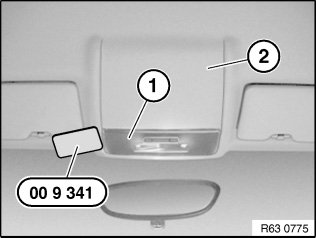

63 31 000 Removing and Installing or Replacing Complete Roof Light (Front)
63 31 000 Removing And Installing Or Replacing Complete Roof Light (Front)
Special tools required:

IMPORTANT: Follow instructions for handling light bulbs (interior lights).

Version with roof switch cluster:
Operation is described in:
- Removing and installing (replacing) roof switch centre

Version without roof switch cluster:
IMPORTANT: Ceiling light (1) and roofliner (2) must not be damaged.
Lever ceiling light (1) with special tool 00 9 341 out of roofliner (2).
Disconnect associated plug connection and remove roof light (1).
Replacement:
If necessary, remove bulbs.